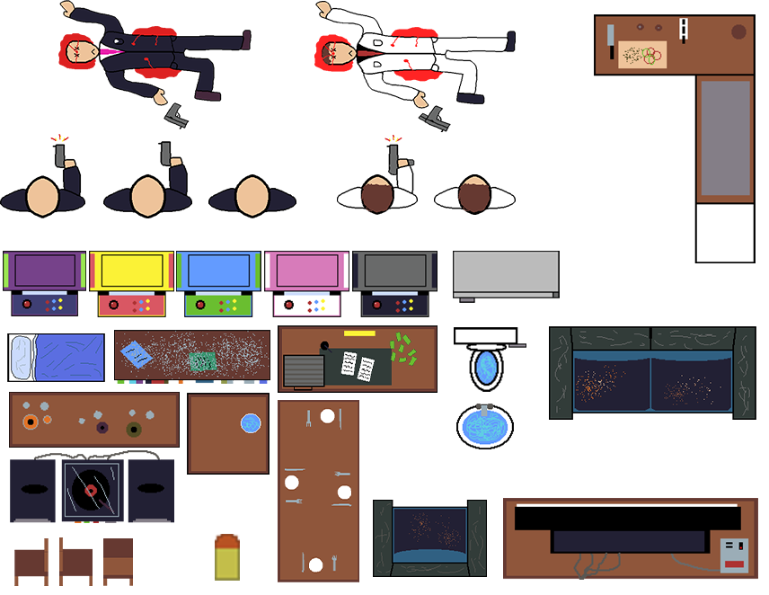

Level 1 Asset Creation
To begin our development of our game, we have researched assets from various games within the genre to give
us an idea of the type of art-style and direction we want to take our game in. 'Hotline Miami' really stood
out to us with both the gameplay and art-style, we are aiming to mimic this sort of look and feel within our
game.
We have decided to create our own assets using tools such as 'Pixelorama' or 'Aseprite' which allowed us to
create the
environment tiles that we brought over to 'Tiled' and created our own tilesheet by placing them into a
tilemap
and exporting it as an image. With our new tilesheet we began placing the tiles into the scene, ensuring
they
are on the correct layers which allows us to implement the walls with ease.
The level we have created has been carefully implemented by following the the sketches we incorporated
within our game design document. After creating
the map, we exported it as both an image and a json file. We then began creating the background objects and
character sprites, using 'Aseprite' that allowed us to create the player and enemies spritesheets which
shows their
life and death poses, along with arcade machines and other objects to help bring some life to the
environment.
Implementing Assets

After Kyle and I created the assets, we began implementing the sprites and other game objects into the
scene, using the load and create functions but the images were too large for the game so we had to resize
the images and layer them correctly so the player doesn't disappear under them. Once we had the level setup,
we began to add some functionality to the player starting with the movement which we originally had as the
arrow keys and was later changed to WASD as it felt more natural.
Now with the player knowing around the
environment, we had to allow the player to look around as it is necessary for our shooting mechanic later in
development, we also reused this code to get the enemies to look at the player when you move around the
environment. We implemented the shooting mechanic but we had to adjust it from our previous idea of limited
ammo to infinite ammo with a cool-down, this makes the game feel more arcade like.
We have also created an
enemy death sprite that appears when they are shot, allowing the game to feel a little realistic as they
don't just disappear.
About Us - Group H
Within our group we have Darren Boyd (B00349291) & Kyle Gibson (B00366928).
When starting the development of our game, Darren (B00349291) started off by creating the background/map
tiles using 'Pixelorama' and imported them into 'Tiled' where they were made into tilesets and placed onto
the map. During this time Kyle (B00366928) created the player and enemy sprites using 'Aseprite', backed
them up into the 'Google Drive' after this we loaded everything into the game.
Darren (B00349291) started working on the player movement and changed the controls from the arrow keys to
WASD which allowed us to start developing the mouse functionality which allowed the player to rotate and
shoot, we both helped get this working as there were some bugs with the shooting being a continuous stream
of bullets.
Kyle (B00366928) created the enemies within the level and gave them the ability to rotate and face the
player, as well as be destroyed on collision with the player's bullet and award the player 10 points per
kill. Darren (B00349291) helped improve upon the enemy death by replacing the sprite with the dead enemy
sprite, which helped give a little more realism to the game as they would previously disappear.